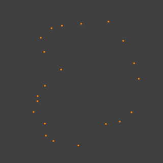

Зробити Ребро/Грань -- Make Edge/Face¶
Орієнтир -- Reference
| Mode: | Edit Mode |
|---|---|
| Menu: | |
| Hotkey: | F |
Це чутливі до контексту засіб, який створює геометрію, заповнюючи виділення. При виділенні лише двох вершин це буде створювати ребро, в інших випадках будуть створюватися грані.
Типовий випадок використання -- виділити вершини та натиснути F, однак, Blender також підтримує створення граней з різних виділів, що допомагає швидко вибудовувати геометрію.
Методи¶
Наступні методи використовуються автоматично, залежно від контексту.
Ізольовані Вершини -- Isolated Vertices¶

Перед. |

Після. |

{kind=link}
N-бічник з Ребер -- N-gon from Edges¶
При виділенні багатьох ребер Blender буде робити N-бічник. Зауважте, що це не підтримує отвори, для підтримки отворів вам необхідно використати інструмент Граней -- Заповнення -- Заповнення -- Fill.

Після. |
{kind=link}
Суміш Вершини/Ребра -- Mixed Vertices/Edges¶
Наявні ребра використовуються для зроблення грані, а також додаткова вершина.

Перед. |

Після. |
Мережа Ребер -- Edge-Net¶
Інколи ви маєте багато з'єднаних ребер без внутрішніх граней.

Перед. |

Після. |
Хмара Точок -- Point Cloud¶
При наявності виділених багатьох ізольованих вершин Blender розрахує ребра для N-бічника.

Перед. |

Після. |
{kind=link}
Виділ Одиничної Вершини -- Single Vertex Selection¶
При виділенні одиничної вершини на рубежі буде створена грань уздовж цього рубежу, що заощадить ручне виділення інших двох вершин. Зверніть увагу, що цей засіб може виконуватися багато разів для продовжуваного створення граней.
Xem thêm
Про інші способи створення граней дивіться:
- Заповнення -- Fill
- Заповнити Ґраткою -- Grid Fill
- Мостити Петлі Ребер -- Bridge Edge Loops
Розчинення наявних граней¶
При наявності у вас виділеного регіону наявних граней створення грані на цьому виділі буде вилучати спільні вершини та ребра, створюючи одиничну грань.
Це просто зручність для доступу до Розчинення Граней -- Розчинити Грані -- Dissolve Faces.